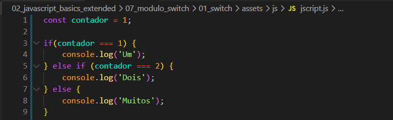
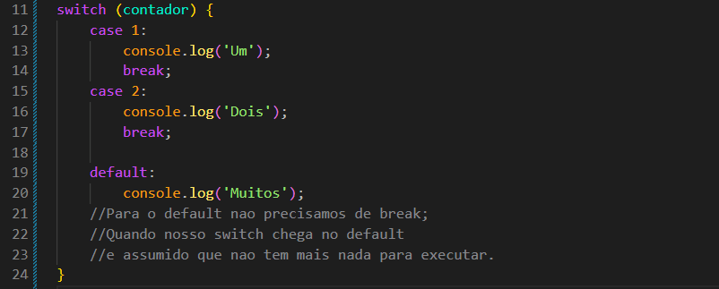

Switch
Intro
Agora iremos ver um pouco sobre estrutura de de controle de fluxo condicional
Codigo de Exemplo:

Agora iremos ver um pouco sobre estrutura de de controle de fluxo condicional

Ele funciona como um "seletor". Ele avalia uma expressão uma única vez e busca um caso (case) que corresponda ao resultado. Se encontrar, ele executa o bloco de código daquele caso.
Sua sintaxe primeiro chamamos o switch de dentro de seus parenteses() passamos a variavel ou expressao que queiramos avaliar. Ficando da seguinte forma:

O switch e o if/else podem realizar tarefas parecidas, mas o switch leva vantagem em alguns cenarios especificos, principalemente quando lidamos com condicoes baseadas em uma unica variavel. Alem disso o switch muitas vezes tem uma melhor performace se comparado a uma cadeia grande de if/else.